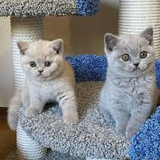
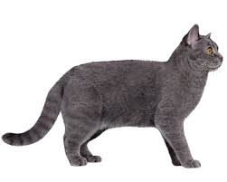
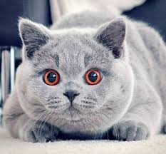
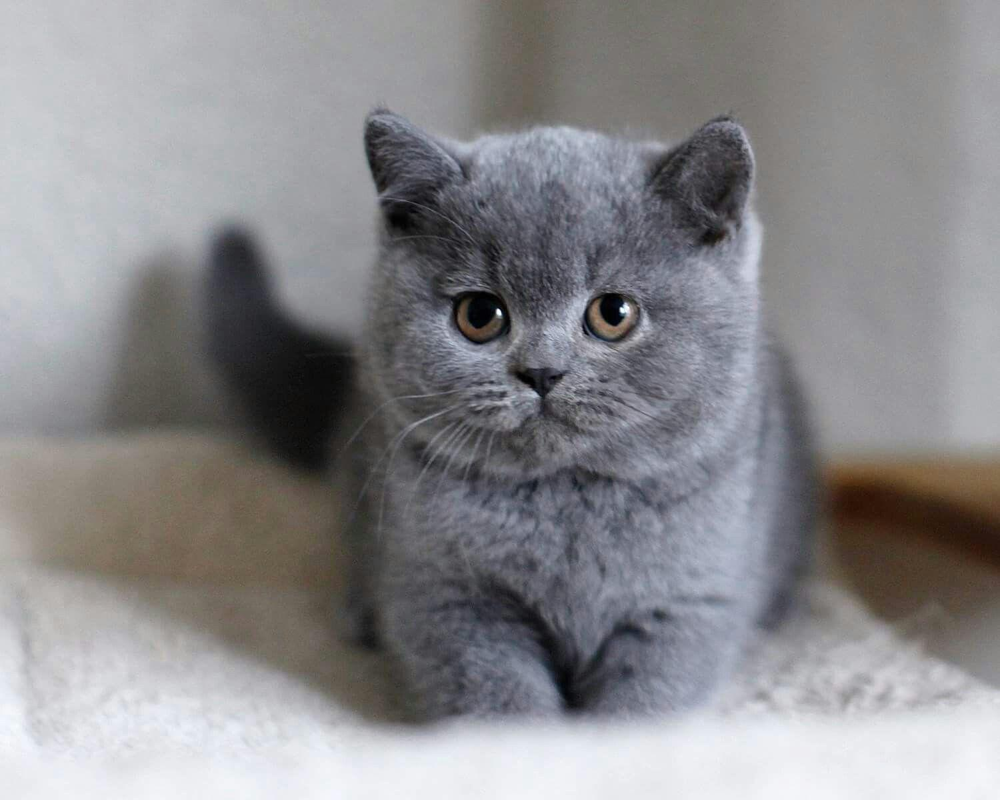

Cute Cats |




|
Home
British Shorthair
Burmese
|
British Shorthair, breed of domestic cat often referred to as a common, or alley, cat; a good show animal, however, is purebred and pedigreed and has been carefully bred to conform to a set standard of appearance. |
British Shorthair |
Image result for british shorthair British Shorthair cats are friendly felines, and very loyal and loving with their family. They enjoy spending time close to their owners, but aren't really lap cats or cuddly kittens. Instead, they show their affection by simply being near you. |
The British Shorthair is the pedigreed version of the traditional British domestic cat, with a distinctively stocky body, dense coat, and broad face. The most familiar colour variant is the "British Blue", with a solid grey-blue coat, orange eyes, and a medium-sized tail. |
If you're looking for a lap cat, then the British Shorthair might not be the best pet for you. But they will like to snuggle up next to you on the sofa. They're also happy to be left alone all day just lazing around. |
One of the most popular cat breeds in the world, the British shorthair is appropriately named. Not only do they have a thick, plush short coat, they also have a friendly yet no-nonsense—that is, rather British—sensibility about life. British shorthairs make ideal family cats and enjoy being with their owners, but may turn up their noses at being held or cuddled too much. |
The domestic shorthair is required by show standards to be a sturdily built cat with strong-boned legs and a round head with round eyes and ears that are rounded at the tips. The coat must be short and may be any of the colours recognized for the longhair, or Persian. Some colours, such as blue cream, are infrequently found in shorthairs; others, such as the tabby colours (silver, brown, blue, and red), are commoner. In Britain, the shorthair is called the British shorthair to distinguish it from other breeds classified as foreign shorthairs. |
Besides being treasured for their easygoing attitude about life, British shorthairs are beloved for their thick, dense coats that come in almost any color or pattern. Blue-gray cats, often called British blues, are probably the most popular color choice of British shorthair fanciers. |
Created by Iren V |
2023, all rights reserved |